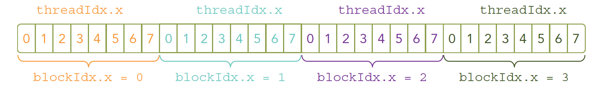

Abstract: 本文继续上文介绍CUDA编程模型关于核函数以及错误处理部分
Keywords: CUDA核函数，CUDA错误处理
CUDA编程模型概述（二）
继续CUDA编程模型的后半部分，关于核函数以及错误处理。
- 核函数
- 启动核函数
- 编写核函数
- 验证核函数
- 错误处理
核函数概述
核函数就是在CUDA模型上诸多线程中运行的那段串行代码，这段代码在设备上运行，用NVCC编译，产生的机器码是GPU的机器码，所以我们写CUDA程序就是写核函数，第一步我们要确保核函数能正确的运行产生正切的结果，第二优化CUDA程序的部分，无论是优化算法，还是调整内存结构，线程结构都是要调整核函数内的代码，来完成这些优化的。
我们一直把我们的CPU当做一个控制者，运行核函数，要从CPU发起，那么我们开始学习如何启动一个核函数
启动核函数
启动核函数，通过的以下的ANSI C 扩展出的CUDA C指令：1
kernel_name<<<grid,block>>>(argument list);
其标准C的原型就是C语言函数调用1
function_name(argument list);
这个三个尖括号’<<<grid,block>>>’内是对设备代码执行的线程结构的配置（或者简称为对内核进行配置），也就是我们上一篇中提到的线程结构中的网格，块。回忆一下上文，我们通过CUDA C内置的数据类型dim3类型的变量来配置grid和block（上文提到过：在设备端访问grid和block属性的数据类型是uint3不能修改的常类型结构，这里反复强调一下）。
通过指定grid和block的维度，我们可以配置：
- 内核中线程的数目
- 内核中使用的线程布局
我们可以使用dim3类型的grid维度和block维度配置内核，也可以使用int类型的变量，或者常量直接初始化：1
kernel_name<<<4,8>>>(argument list);
上面这条指令的线程布局是：

我们的核函数是同时复制到多个线程执行的，上文我们说过一个对应问题，多个计算执行在一个数据，肯定是浪费时间，所以为了让多线程按照我们的意愿对应到不同的数据，就要给线程一个唯一的标识，由于设备内存是线性的（基本市面上的内存硬件都是线性形式存储数据的）我们观察上图，可以用threadIdx.x 和blockIdx.x 来组合获得对应的线程的唯一标识（后面我们会看到，threadIdx和blockIdx能组合出很多不一样的效果）
接下来我们就是修改代码的时间了，改变核函数的配置，产生运行出结果一样，但效率不同的代码：
- 一个块：
1 | kernel_name<<<1,32>>>(argument list); |
- 32个块
1 | kernel_name<<<32,1>>>(argument list); |
上述代码如果没有特殊结构在核函数中，执行结果应该一致，但是有些效率会一直比较低。
上面这些是启动部分，当主机启动了核函数，控制权马上回到主机，而不是主机等待设备完成核函数的运行，这一点我们上一篇文章也有提到过（就是等待hello world输出的那段代码后面要加一句）
想要主机等待设备端执行可以用下面这个指令：1
cudaError_t cudaDeviceSynchronize(void);
这是一个显示的方法，对应的也有隐式方法，隐式方法就是不明确说明主机要等待设备端，而是设备端不执行完，主机没办法进行，比如内存拷贝函数：1
2cudaError_t cudaMemcpy(void* dst,const void * src,
size_t count,cudaMemcpyKind kind);
这个函数上文已经介绍过了，当核函数启动后的下一条指令就是从设备复制数据回主机端，那么主机端必须要等待设备端计算完成。
所有CUDA核函数的启动都是异步的，这点与C语言是完全不同的编写核函数
我们会启动核函数了，但是核函数哪里来的？当然我们写的，核函数也是一个函数，但是声明核函数有一个比较模板化的方法：1
__global__ void kernel_name(argument list);
注意：声明和定义是不同的，这点CUDA与C语言是一致的
在C语言函数前没有的限定符global ,CUDA C中还有一些其他我们在C中没有的限定符，如下：
| 限定符 | 执行 | 调用 | 备注 |
|---|---|---|---|
| __global__ | 设备端执行 | 可以从主机调用也可以从计算能力3以上的设备调用 | 必须有一个void的返回类型 |
| __device__ | 设备端执行 | 设备端调用 | |
| __host__ | 主机端执行 | 主机调用 | 可以省略 |
而且这里有个特殊的情况就是有些函数可以同时定义为 device 和 host ，这种函数可以同时被设备和主机端的代码调用，主机端代码调用函数很正常，设备端调用函数与C语言一致，但是要声明成设备端代码，告诉nvcc编译成设备机器码，同时声明主机端设备端函数，那么就要告诉编译器，生成两份不同设备的机器码。
Kernel核函数编写有以下限制
- 只能访问设备内存
- 必须有void返回类型
- 不支持可变数量的参数
- 不支持静态变量
- 显示异步行为
并行程序中经常的一种现象：把串行代码并行化时对串行代码块for的操作，也就是把for并行化。
例如：
串行：1
2
3
4void sumArraysOnHost(float *A, float *B, float *C, const int N) {
for (int i = 0; i < N; i++)
C[i] = A[i] + B[i];
}
并行：1
2
3
4__global__ void sumArraysOnGPU(float *A, float *B, float *C) {
int i = threadIdx.x;
C[i] = A[i] + B[i];
}
这两个简单的段不能执行，但是我们可以大致的看一下for展开并行化的样子，没吃过鸡肉的时候可以先看看鸡跑（我的博客是清真的）。
验证核函数
验证核函数就是验证其正确性，下面这段代码上文出现过，但是同样包含验证核函数的方法：
代码库：https://github.com/Tony-Tan/CUDA_Freshman
1 | /* |
在开发阶段，每一步都进行验证是绝对高效的，比把所有功能都写好，然后进行测试这种过程效率高很多，同样写CUDA也是这样的每个代码小块都进行测试，看起来慢，实际会提高很多效率。
CUDA小技巧，当我们进行调试的时候可以把核函数配置成单线程的：1
kernel_name<<<1,1>>>(argument list)
错误处理
所有编程都需要对错误进行处理，早起的编码错误，编译器会帮我们搞定，内存错误也能观察出来，但是有些逻辑错误很难发现，甚至到了上线运行时才会被发现，而且有些厉害的bug复现会很难，不总出现，但是很致命，而且CUDA基本都是异步执行的，当错误出现的时候，不一定是哪一条指令触发的，这一点非常头疼；这时候我们就需要对错误进行防御性处理了，例如我们代码库头文件里面的这个宏：1
2
3
4
5
6
7
8
9
10
{\
const cudaError_t error=call;\
if(error!=cudaSuccess)\
{\
printf("ERROR: %s:%d,",__FILE__,__LINE__);\
printf("code:%d,reason:%s\n",error,cudaGetErrorString(error));\
exit(1);\
}\
}
就是获得每个函数执行后的返回结果，然后对不成功的信息加以处理，CUDA C 的API每个调用都会返回一个错误代码，这个代码我们就可以好好利用了，当然在release版本中可以去除这部分，但是开发的时候一定要有的。
编译执行
接下来我们对上面那段向量加法的代码编译执行，观察结果，这里需要一张图，我明天早上连接服务器后运行给出，今晚网太差，所以请见谅，
编译指令：1
nvcc xxxx.cu -o xxxx
总结
这篇可以说写的比前几篇流畅很多，因为这篇知识很连贯，不想漆面的概览，琐碎的知识，我们明天继续。。。